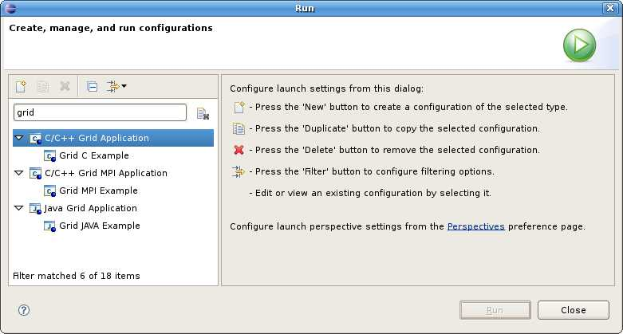
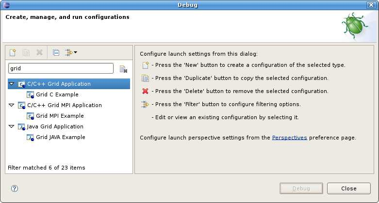

Launching and Debugging Applications
Currently g-Eclipse offers GLogin-based grid launch configurations for the following application types:
These launch configurations allow running

as well as debugging applications of those three different types.

Back to Getting Started